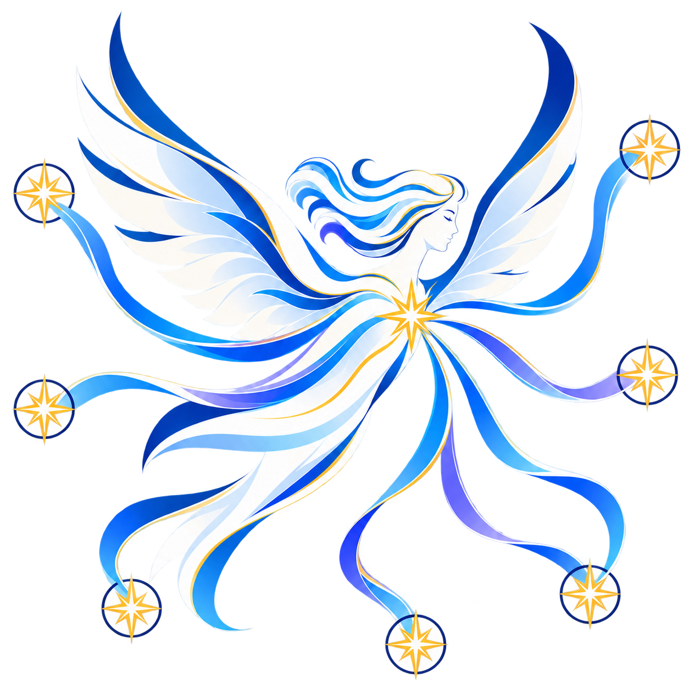

Adopted direction · the wind messenger
风之信使
Ariel 不再是令人畏惧的风暴化身，而是从晨风中接令、向六处持续送信的空气精灵。打开的羽翼表达自由，中央晨星表达唯一命令源，六条风带对应多个 Agent App 会话端点。
- 浪漫侧身、闭目与晨光，去掉凝视和威慑
- 可靠六路都从同一个 relay core 清晰出发
- 克制金色只标记命令与接收，不做装饰

同一位信使，四种交付资产。
图形不再分裂成不同风格。彩色版负责完整叙事，单双色版只减色与减线，微标只保留打开双翼、中央星与六路接收。





尺寸改变时，细节层级也要改变。
阈值按最终显示宽度判断，不按源文件分辨率判断。清晰度优先于“所有场景都长得完全一样”。
彩色主版
≥ 320 px
完整保留人物、羽翼、色彩与六条传令路径。适合品牌叙事，不用于导航或 favicon。
320+
单色主版
128–319 px
中尺寸使用同源单色稿。浅底用深墨，深底用反白；不得把彩色主版滤镜化。
128
六路微标
16–127 px
导航常用 24/32 px，应用图标常用 64/96 px。16 px 为绝对数字下限。
163264
清晨的风，不是糖果色。
冷色承担空气、稳定与软件感；晨金只标记“命令从哪里发出、被哪里接收”。不使用霓虹描边、卡通高光或全幅渐变。
Cloud White
#F7FBFF
浅色基底、羽翼留白Wind Indigo
#162B5C
轮廓、单色主标Relay Blue
#246BFD
主行动、深层羽翼Open Sky
#72C7FF
风带、轻层次Iris Air
#7A72E8
次级风带，限量使用Dawn Gold
#F6B942
命令源与六个接收点进入产品后，Logo 应当安静下来。
主标负责讲故事；产品导航只负责识别。不同媒介使用不同层级，避免把完整人物塞进 24 px。
wu8685 / Ariel
ArielA browser relay for desktop Agent Apps.
Connected sessionContinue from any device
四条规则，守住浪漫而不失专业。
净空以中央晨星直径为 1×。主标四周至少保留 1×，头像中图形占画布宽度 76%–82%。
只有一个命令源
中央晨星是唯一金色源点。不得增加第二个中心、额外光环或装饰星群。
始终保留六路
六条路径对应多个 Agent App 会话端点。不得删成单一路径，也不要添加更多造成噪声。
单色必须真一色
浅底使用 #162B5C，深底使用 #F7F9FC。不要用 CSS filter 临时生成单色。
不回到卡通或暗黑
不加大眼、表情、爪、武器、霓虹外发光、黑暗面具或游戏阵营式徽章。